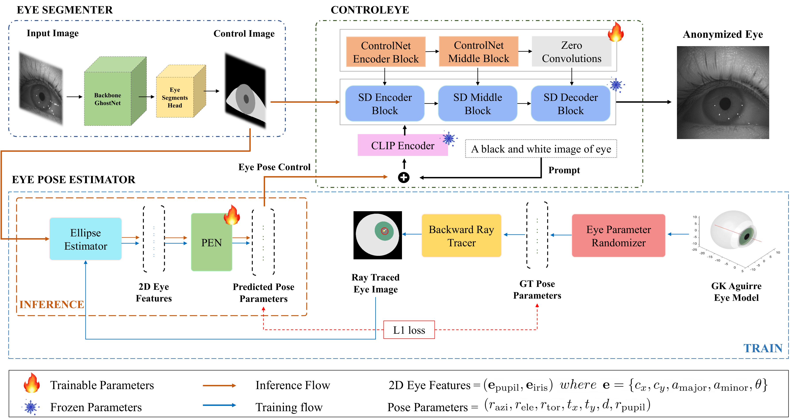
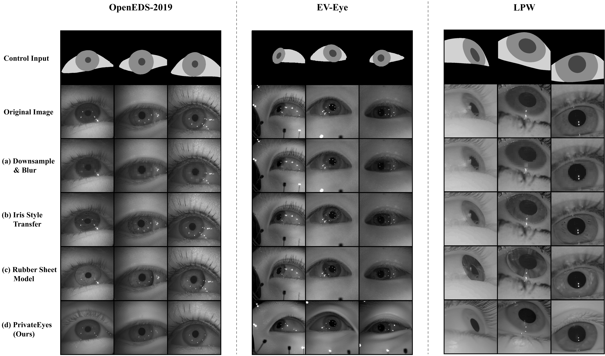

Eye images captured from wearable devices such as head-mounted displays (HMDs) contain identifiable biometric cues, posing significant challenges for safe data sharing. Existing eye anonymization techniques often degrade downstream performance, particularly gaze estimation while still retaining iris-recognizable features.
To address these limitations, we propose PrivateEyes, a privacy-preserving framework that synthesizes anonymized yet gaze-consistent eye images. Our approach employs a three-stage pipeline: (1) a deep segmentation network that isolates semantic eye regions and provides structural control signals for synthesis, (2) a pose estimation network (PEN) trained on anatomically accurate synthetic eye renders to infer precise eye pose, and (3) a conditional diffusion model that reconstructs realistic anonymized eye images conditioned on segmentation and pose. Extensive experiments across multiple benchmark datasets show that PrivateEyes achieves superior gaze-estimation accuracy compared to state-of-the-art anonymization baselines while significantly reducing iris-recognition accuracy.
We adopt a geometry-grounded modular pipeline over an end-to-end generator to provide explicit control over gaze interpretability and enable targeted improvements without full retraining. The pipeline consists of three key modules:

Figure 2. Proposed Method. Overview of the Eye Segmenter, Eye Pose Estimator (PEN), and ControlEye modules.
Effective privacy-preserving gaze tracking requires balancing strong anonymization (low iris recognition accuracy) and high task utility (low gaze error). PrivateEyes achieves substantially lower gaze-estimation error while simultaneously reducing iris-recognition accuracy across all evaluation benchmarks.

Figure 3. Image Quality. Qualitative comparison of anonymized eye images across multiple evaluation datasets (OpenEDS-2019, EV-Eye, LPW).
@inproceedings{gupta2026privateeyes,
title={PrivateEyes: Gaze-Preserving Anonymization for Data Sharing},
author={Gupta, Surabhi and Muthumariappan, Dinesh Prabhu and Das, Biplab and Rajagopal, Anoop Kolar and Iyer, Kiran Nanjunda and Seo, Donghwan},
booktitle={Proceedings of the IEEE/CVF Conference on Computer Vision and Pattern Recognition (CVPR)},
year={2026}
}{kind=link}